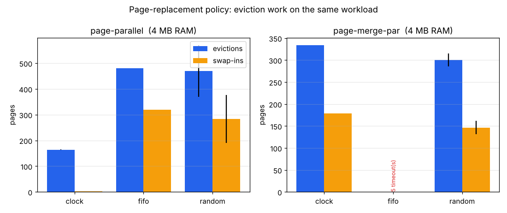
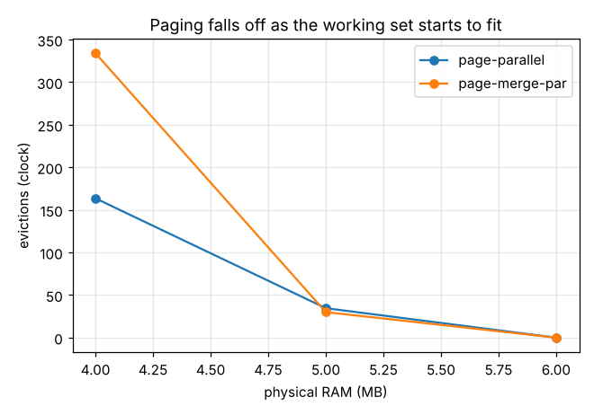
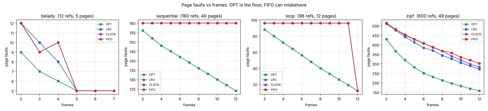

Page-replacement benchmarks
Measuring eviction-policy trade-offs in a demand-paged Pintos kernel — part of unix-kernel-subsystem.
The kernel pages on demand and chooses its eviction policy at boot
(-evict=clock|fifo|random). These numbers are the kernel's own
KSTAT counters over 10 seeds per configuration, collected by
scripts/bench.sh and
summarised by
analyze.py.
Design rationale is in
ADR-003.
page-parallel (4 MB)page-merge-par past the time budget; clock finishes in
~3 sWatch it run
A replay of the kernel's real output: a fork bomb contained, a CPU hog killed at its budget, a well-behaved process still finishing on time beside both, and demand-paged VM swapping a working set larger than RAM.
Recorded kernel output, replayed. Click to pause/resume.
Policy comparison at a fixed memory budget (4 MB)
At 4 MB every workload pages heavily, so the policy alone decides how much I/O the system does for the same program. Fewer swap-ins is better — a swap-in is a page the policy evicted and the program immediately needed back.

| workload | policy | ok | evictions | swap-ins | swap-outs | page-faults | ticks |
|---|---|---|---|---|---|---|---|
| page-merge-par | clock | 10/10 | 334 | 179 | 331 | 732 | 296±20 |
| page-merge-par | fifo | 0/5 | — | — | — | — | — |
| page-merge-par | random | 5/5 | 299±6 | 145±7 | 297±7 | 697±6 | 299±10 |
| page-parallel | clock | 10/10 | 164±1 | 3 | 159±1 | 1050 | 120±8 |
| page-parallel | fifo | 4/5 | 478±1 | 319±0 | 478±0 | 1364±1 | 174±17 |
| page-parallel | random | 5/5 | 540±184 | 362±137 | 532±181 | 1413±140 | 208±38 |
Paging curve: clock vs physical RAM
Holding the policy at clock and growing RAM shows the working set starting to fit — eviction collapses to zero once it is resident.

| workload | RAM (MB) | ok | evictions | swap-ins | page-faults |
|---|---|---|---|---|---|
| page-merge-par | 4 | 10/10 | 334 | 179 | 732 |
| page-merge-par | 5 | 5/5 | 30 | 3 | 556 |
| page-merge-par | 6 | 5/5 | 0 | 0 | 550 |
| page-parallel | 4 | 10/10 | 164±1 | 3 | 1050 |
| page-parallel | 5 | 5/5 | 35±1 | 3 | 1050 |
| page-parallel | 6 | 5/5 | 0 | 0 | 1044 |
swap_in
and a load-during-eviction window — that only the benchmark's parallel
stress triggered. Both are fixed; every memory size now passes. Write-up:
BUGS-FOUND.md.Theory: simulation against Belady's optimal
A trace-driven simulator
(simulate.py) runs the
same reference strings under FIFO, LRU, CLOCK and OPT (Belady's optimal, the
unbeatable lower bound). It reproduces Belady's anomaly — FIFO faulting
more with more frames — which LRU and OPT, as stack algorithms,
never do.
